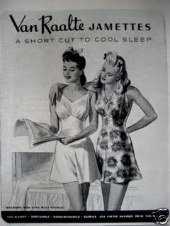
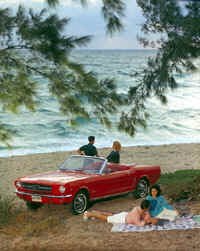
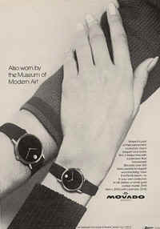
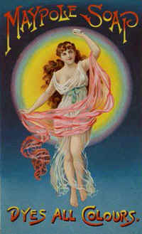
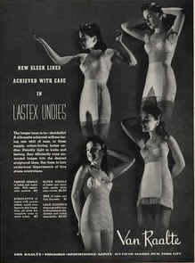

The icon compresses a story or process into a nondiscursive gestalt, a compact image
that can be understood in an instant.

Ad from a more innocent time.
The
continuous pressure is to create ads more and more in the image of audience motives and
desires. The product matters less as the audience participation increases. An extreme
example is the corset series that protests that "it is not the corset that you
feel." The need is to make the ad include the audience experience. The product and the public response become a single
complex pattern. The art of advertising has wondrously come to fulfill the early
definition of anthropology as "the science of man embracing woman." The steady
trend in advertising is to manifest the product as an integral part of large social
purposes and processes. With very large budgets the commercial artists have tended to
develop the ad into an icon, and icons are not specialist fragments or aspects but unified
and compressed images of complex kind. They focus a large region of experience in tiny
compass. The trend in ads, then, is away from the consumer picture of product to the
producer image of process. The corporate image of process includes the consumer in the
producer role as well.
This
powerful new trend in ads toward the iconic image has greatly weakened the position of the
magazine industry in general and the picture magazines in particular. Magazine features
have long employed the pictorial treatment of themes and news. Side by side with these
magazine features that present shots and fragmentary points of view, there are the new
massive iconic ads with their compressed images that include producer and consumer, seller
and society in a single image. The ads make the features seem pale, weak, and anemic. The
features belong to the old pictorial world that preceded TV mosaic imagery.
It is the
powerful mosaic and iconic thrust in our experience since TV that explains the paradox of
the upsurge of Time and Newsweek and similar magazines. These magazines
present the news in a compressed mosaic form that is a real parallel to the ad world.
Mosaic news is neither narrative, nor point of view, nor explanation, nor comment. It is a
corporate image in depth of the community in action and invites maximal participation in
the social process.
Ads seem to
work on the very advanced principle that a small pellet or pattern in a noisy, redundant
barrage of repetition will gradually assert itself. Ads push the principle of noise all
the way to the plateau of persuasion. They are quite in accord with the procedures of
brain-washing. This depth principle of onslaught on the unconscious may be the reason why.
Paradoxically the goal of ads is to create a
Marxist paradise (minus gulags and executions).
Ultimately ads are the way a society
communicates with itself to create an organic social order. When advertising is most
effective, it is educational, i.e. it is a dialog between producers and consumers that
removes friction and inefficiency from the marketplace.
Many people
have expressed uneasiness about the advertising enterprise in our time. To put the matter
abruptly, the advertising industry is a crude
attempt to extend the principles of automation to every aspect of society. Ideally,
advertising aims at the goal of a programmed harmony among all human impulses and
aspirations and endeavors. Using handicraft methods, it stretches out toward the ultimate
electronic goal of a collective consciousness. When all production and all consumption are
brought into a pre-established harmony with all desire and all effort, then advertising
will have liquidated itself by its own success.
The cool, fuzzy image of the low definition
TV screen muffles the hard-edged message and slick glamour of aggressive pictorial ads,
exposing them as shabby, unctuous sleaze.
The human comedy. All things human are essentially funny, especially man's vanities and
base impulses.
Newspapers use many of the techniques of advertising to get the attention of readers,
such as shocking and lurid headlines; while recent ads have striven to look more like
legitimate news stories.

This Ford Mustang ad is a dramatization of a communal experience—the family
picnic
Since the
advent of TV, the exploitation of the unconscious by the advertiser has hit a snag. TV
experience favors much more consciousness concerning the unconscious than do the hardsell
forms of presentation in the press, the magazine, movie, or radio. The sensory tolerance
of the audience has changed, and so have the methods of appeal by the advertisers. In the
new cool TV world, the old hot world of hard-selling, earnest-talking salesmen has all the
antique charm of the songs and togs of the 1920s. Mort Sahl and Shelley Berman are merely
following, hot setting, a trend in spoofing the ad world. They discovered that they have
only to reel off an ad or news item to have the audience in fits. Will Rogers discovered years ago that any newspaper
read aloud from a theater stage is hilarious. The same is true today of ads. Any ad
put into a new setting is funny. This is a way of saying that any ad consciously attended
to is comical. Ads are not meant for conscious consumption. They are intended as
subliminal pills for the subconscious in order to exercise an hypnotic spell, especially
on sociologists. That is one of the most edifying aspects of the huge educational
enterprise that we call advertising, whose twelve-billion-dollar annual budget
approximates the national school budget. Any expensive ad represents the toil, attention,
testing, wit, art, and skill of many people. Far more thought and care go into the
composition of any prominent ad in a newspaper or magazine than go into the writing of
their features and editorials. Any expensive ad is as carefully built on the tested
foundations of public stereotypes or "sets" of established attitudes, as any
skyscraper is built on bedrock. Since highly skilled and perceptive teams of talent
cooperate in the making of an ad for any established line of goods whatever, it is obvious that any acceptable ad is a vigorous
dramatization of communal experience. No group of sociologists can approximate the
ad teams in the gathering and processing of exploitable social data. The ad teams have
billions to spend annually on research and testing of reactions, and their products are
magnificent accumulations of material about the shared experience and feelings of the
entire community. Of course, if ads were to depart from the center of this shared
experience, they would collapse at once, by losing all hold on our feelings.
Advertising eye-cons promote an uncontrolled
appetite for 'things' and consumer values.
It is true,
of course, that ads use the most basic and tested human experience of a community in
grotesque ways. They are as incongruous, if looked at consciously, as the playing of
"Silver Threads among the Gold" as music for a strip-tease act. But ads are
carefully designed by the Madison Avenue frogmen-of-the-mind for semiconscious exposure.
Their mere existence is a testimony, as well as a contribution, to the somnambulistic
state of a tired metropolis.

After the
Second War, an ad-conscious American army officer in Italy noted with misgiving that
Italians could tell you the names of cabinet ministers, but not the names of commodities
preferred by Italian celebrities. Furthermore, he said, the wall space of Italian cities
was given over to political, rather than commercial, slogans. He predicted that there was
small hope that Italians would ever achieve any sort of domestic prosperity or calm until
they began to worry about the rival claims of cornflakes and cigarettes, rather than the
capacities of public men. In fact, he went so far as to say that democratic freedom very
largely consists in ignoring politics and worrying, instead, about the threat of scaly
scalp, hairy legs, sluggish bowels, saggy breasts, receding gums, excess weight, and tired
blood.
Political homeostasis and social harmony are the sine qua non of a prosperous
economy.
Tribal politics invariably result in predatory behaviors, militarism, the
endless cycle of violence seen in the early city-states. Constitutional democracies, based
on literacy and the rule of law, are more predisposed to the pursuit of material happiness
and wealth than to world conquest or imposing their will on their neighbors…
…nevertheless, tribal cultures acutely sense the fragmented perspective of
literate cultures at once.
The army
officer was probably right. Any community that wants to expedite and maximize the exchange
of goods and services has simply got to homogenize its social life. The decision to
homogenize comes easily to the highly literate population of the English-speaking world.
Yet it is hard for oral cultures to agree on this program of homogenization, for they are
only too prone to translate the message of radio into tribal politics, rather than into a
new means of pushing Cadillacs. This is one reason that it was easy for the retribalized Nazi to feel
superior to the American consumer. The tribal man can spot the gaps in the literate
mentality very easily. On the other hand, it is the special illusion of literate societies
that they are highly aware and individualistic. Centuries of typographic conditioning in
patterns of lineal uniformity and fragmented repeatability have, in the electric age, been
given increasing critical attention by the artistic world. The lineal process has been
pushed out of industry, not only in management and production, but in entertainment, as
well. It is the new mosaic form of the TV image that has replaced the Gutenberg structural
assumptions. Reviewers of William Burroughs' The Naked Lunch have alluded to the
prominent use of the "mosaic" term and method in his novel. The TV image renders
the world of standard brands and consumer goods merely amusing. Basically, the reason is
that the mosaic mesh of the TV image compels
so much active participation on the part of the viewer that he develops a nostalgia for
pre-consumer ways and days. Lewis Mumford gets serious attention when he praises
the cohesive form of medieval towns as relevant to our time and needs.

Advertising
got into high gear only at the end of the last century, with the invention of
photoengraving. Ads and pictures then became interchangeable and have continued so. More
important, pictures made possible great increases in newspaper and magazine circulation
that also increased the quantity and profitability of ads. Today it is inconceivable that
any publication, daily or periodical, could hold more than a few thousand readers without
pictures. For both the pictorial ad or the picture story provide large quantities of
instant information and instant humans, such as are necessary for keeping abreast in our
kind of culture. Would it not seem natural and necessary that the young be provided with
at least as much training of perception in this graphic and photographic world as they get
in the typographic? In fact, they need more training in graphics, because the art of casting and arranging actors in ads is
both complex and forcefully insidious.
TV represents a consensus in taste and value; it is a communal experience, in that there
is the immediacy of a live TV audience; whereas literature is a private and solitary
experience that promotes a greater variety of viewpoints.
Ads do their work like new
media: they impose themselves at the subliminal level while the conscious mind is
distracted with appearances.
Ads often reveal patterns of cultural and social pathology.

Lubricious Dream Girls
Some writers
have argued that the Graphic Revolution has shifted our culture away from private ideals
to corporate images. That is really to say that the photo and TV seduce us from the literate
and private "point of view" to the complex and inclusive world of the group
icon. That is certainly what advertising does. Instead of presenting a private argument or
vista, it offers a way of life that is for everybody or nobody. It offers this prospect
with arguments that concern only irrelevant and trivial matters. For example, a lush car
ad features a baby's rattle on the rich rug of the back floor and says that it has removed
unwanted car rattles as easily as the user could remove the baby's rattle. This kind of
copy has really nothing to do with rattles. The copy is merely a punning gag to distract
the critical faculties while the image of the car goes to work on the hypnotized viewer.
Those who have spent their lives protesting about "false and misleading ad copy"
are godsends to advertisers, as teetotalers are to brewers, and moral censors are to books
and films. The protestors are the best acclaimers and accelerators. Since the advent of
pictures, the job of the ad copy is as incidental and latent, as the "meaning"
of a poem is to a poem, or the words of a song are to a song. Highly literate people
cannot cope with the nonverbal art of the pictorial, so they dance impatiently up and down
to express a pointless disapproval that renders them futile and gives new power and
authority to the ads. The unconscious
depth-messages of ads are never attacked by the literate, because of their incapacity to
notice or discuss nonverbal forms of arrangement and meaning. They have not the art
to argue with pictures. When early in TV broadcasting hidden ads were tried out, the
literate were in a great panic until they were dropped. The fact that typography is itself
mainly subliminal in effect and that pictures are, as well, is a secret that is safe from
the book-oriented community.
When the
movies came, the entire pattern of American life went on the screen as a nonstop ad.
Whatever any actor or actress wore or used or ate was such an ad as had never been dreamed
of. The American bathroom, kitchen, and car, like everything else, got the Arabian
Nights treatment. The result was that all ads in magazines and the press had to look
like scenes from a movie. They still do. But the focus has had to become softer since TV.
The fragmented 1920s man is very naive compared to his contemporary tribal counterpart.
With radio,
ads openly went over to the incantation of the singing commercial. Noise and nausea as a
technique of achieving unforgettability became universal. Ad and image making became, and
have remained, the one really dynamic and growing part of the economy. Both movie and
radio are hot media, whose arrival pepped up everybody to a great degree, giving us the
Roaring Twenties. The effect was to provide a massive platform and a mandate for sales
promotion as a way of life that ended only with The Death of a Salesmanand the advent
of TV. These two events did not coincide by accident. TV introduced that "experience
in depth" and the "do-it-yourself" pattern of living that has shattered the
image of the individualist hard-sell salesman and the docile consumer, just as it has
blurred the formerly clear figures of the movie stars. This is not to suggest that Arthur
Miller was trying to explain TV to America on the eve of its arrival, though he could as
appropriately have titled his play "The Birth of the PR Man." Those who saw
Harold Lloyd's World of Comedy film will remember their surprise at how much of the
1920s they had forgotten. Also, they were surprised to find evidence of how naive and
simple the Twenties really were. That age of the vamps, the sheiks, and the cavemen was a
raucous nursery compared to our world, in which children read MAD magazine for
chuckles. It was a world still innocently engaged in expanding and exploding, in
separating and teasing and tearing. Today, with TV, we are experiencing the opposite
process of integrating and interrelating that is anything but innocent. The simple faith
of the salesman in the irresistibility of his line (both talk and goods) now yields to the
complex togetherness of the corporate posture, the process and the organization.
Ads have
proved to be a self-liquidating form of community entertainment. They came along just
after the Victorian gospel of work, and they promised a Beulah land of perfectibility,
where it would be possible to "iron shirts without hating your husband." And now
they are deserting the individual consumer-product in favor of the all-inclusive and
never-ending process that is the Image of any great corporate enterprise. The Container
Corporation of America does not feature paper bags and paper cups in its ads, but the
container function, by means of great art. The historians and archeologists will
one day discover that the ads of our time
are the richest and most faithful daily reflections that any society ever made of its
entire range of activities. The Egyptian hieroglyph lags far behind in this
respect. With TV, the smarter advertisers have made free with fur and fuzz, and blur and
buzz. They have, in a word, taken a skin-dive. For that is what the TV viewer is. He is a
skin-diver, and he no longer likes garish daylight on hard, shiny surfaces, though he must
continue to put up with a noisy radio sound track that is painful.